Seat Design
Driver Positioning and Ergonomics
The seat geometry was developed using driver body measurements and a custom-built ergonomics jig to determine the drivers' preferred seat positions.
I incorporated direct feedback from the previous B19 seat design and reviewed literature on seat ergonomics and lumbar support,
though driver preference and feedback was prioritized over literature in designs.
I designed an adjustable three-panel ergonomics jig that allowed us to change the angles of the back, leg support, and hip positioning within cockpit constraints.
These included the firewall position/angle and available cockpit space, which limited how reclined the seat could be. The jig with the selected angles was modeled in CAD.
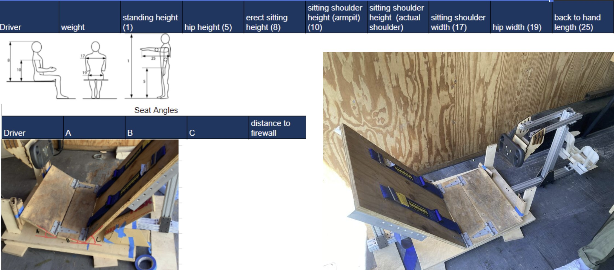
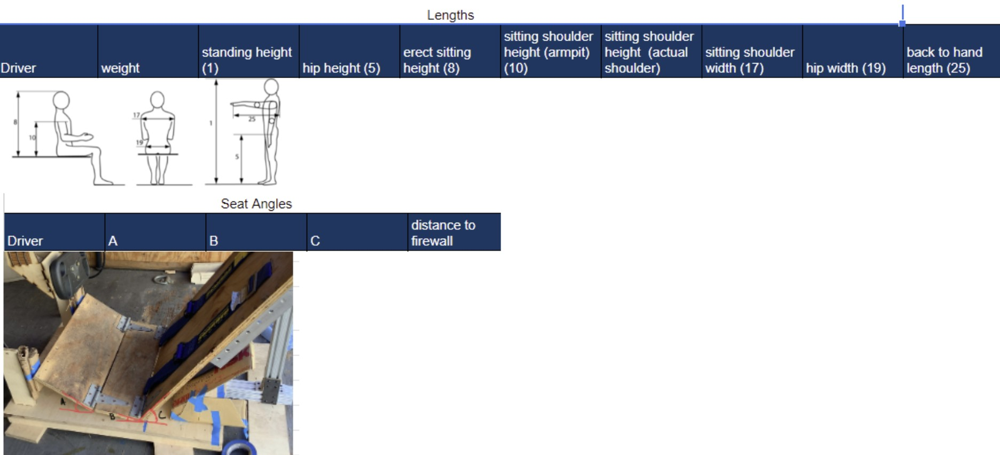
The final seating position was optimized for the primary B22 drivers while maintaining compatibility across the 5th percentile female to 95th percentile male range
(and accommodating for our tallest driver who was beyond the 95% percentile).
Using the driver body measurements results, I created articulated CAD models of driver torsos + hip/upper leg segments, as well as a model of the 5th percentile female
and 95th percentile male. Each model consisted of segmented torso and hip sections with coincident centers, allowing them to be positioned
and bent like a human.
I then bent and placed these models into the ergo jig CAD. These models were then placed into the chassis CAD model for proper positioning.
I designed the seat by following the resulting body contours and taking into account suggestions from drivers and literature. Notable features included:
- Minimized pressure zones
- Maximized surface contact, avoiding high load on sensitive areas
- Geometry allows load to be symmetrically applied
- 45 degree recline angle with neutral body posture
- Pressure on the discs and overall stress on the body decreases with a more reclined posture
- Erect position leads to over tensioned muscles, risk increasing premature fatigue
- Shoulders are relaxed and kept back against backrest
- Good lumbar support, iterated for comfort
- slumped posture leads to unfavourable pelvis rotation/position, creating discomfort + pain
- Lowest possible mounting for a low vehicle C.G.
The design included a flange around the seat, harness pass-throughs, and mounting “t-hat” holes for proper chassis integration.
During the design process, FSAE rules were taken into account, notably:
- Harness straps must be free to move and cannot rub on seat openings or structural members (included researching and purchasing a rules compliant harness).
- Seat design must not interfere with the harness routing to ensure the Frontal Head Restraint (FHR/HANS) operates correctly.
- Seat positioning constraints:
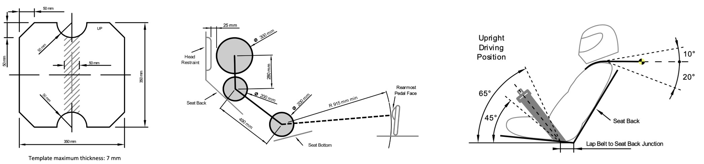
A plywood prototype was made to receive additional feedback from drivers.
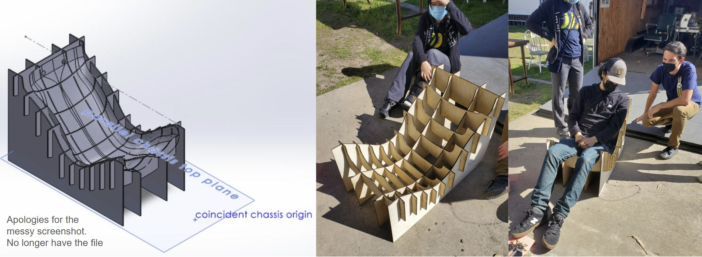
The final design included changes such as:
- Increased upper body side support underneath arms for lateral stability
- Improved leg support for comfort under braking
- Reduced shoulder constraints that interfered with steering input
- Adjusted lumbar support for a more natural driving posture
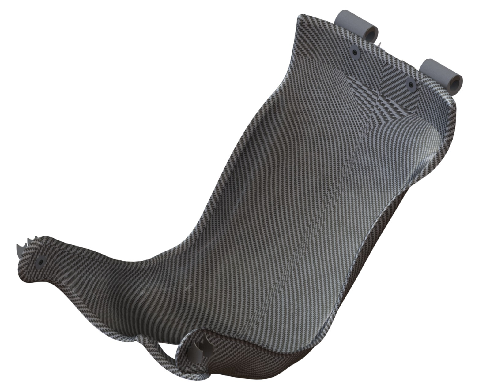
Structural Design and Layup
The seat was designed as 6-ply carbon fiber laminate with a Rohacell foam core (90/45/90/rohacell core/90/45/90) to increase bending stiffness without significantly increasing mass.
Preliminary structural validation was performed using SolidWorks FEA on the B19 seat design. The choice to run simulations on the B19 seat was because I was still
finalizing the new seat design and the B19 seat allowed for a more simplified simulation.
Under a 2G cornering load with a 170 lb driver, the design achieved a FOS of approximately 20 against yield with 6-ply carbon fiber with Rohacell RIMA 051 core. Rohacell was chosen
over Nomex aramid honeycomb and no core at all as it due to the complex curvature of the seat and potential for bending.
A conservative carbon fiber modulus was used due to the absence of manufacturer data, while Rohacell core properties were taken from datasheets.
6-ply carbon fiber was chosen despite the extremely high FOS as drivers expressed concern about the stiffness of the 4-ply B19 seat, saying that it felt "flimsy."
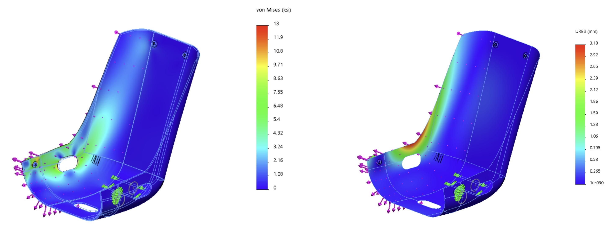
Looking back, we should have done coupon testing to determine the carbon fiber young’s modulus and used ANSYS Composite Preppost for sandwich calc to refine material properties and improve prediction accuracy.
Mounting Design
The seat mounting system was designed to securely attach the composite seat to the chassis while maintaining driver comfort,
structural integrity, and compliance with FSAE safety regulations. The seat interfaces with welded tabs on the chassis, requiring
careful coordination between composite design, hardware integration, and chassis geometry.
Aluminum “T-hat” inserts were bonded directly to the carbon fiber seat to provide a better load path between the composite structure
and the mounting hardware. These inserts were designed to distribute loads effectively while minimizing local stress concentrations
in the laminate. To improve driver comfort and packaging, the mounting hardware was designed to sit as flush as possible with the seat surface.
This was achieved using counterbored features and button head screws.
The button head fasteners interface with two lug floating anchor nuts located on the back side of the seat tabs, allowing for
easier assembly and accommodating minor misalignment during installation. New seat tabs were designed and welded onto the chassis
to match the updated seat geometry, with key constraints driven by FSAE safety rules such as edge distance-to-diameter (e/D) requirements.
The upper seat tabs were additionally designed to constrain both the seat and the heat shield, integrating multiple subsystems
into a single mounting solution.
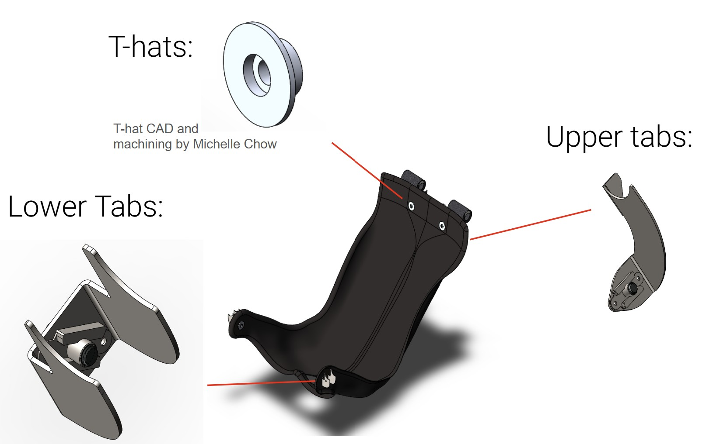
Hand calculations were performed to validate the structural integrity of the mounting interfaces
under expected loading conditions.
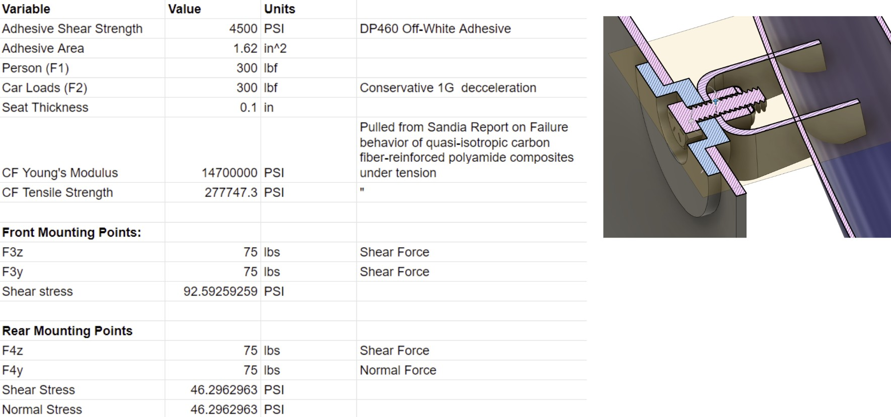
To ensure accurate placement of the mounting tabs, dedicated welding jigs were designed using 80/20 extrusion and precision angle blocks.
These jigs constrained the tab locations during welding, achieving tolerances of approximately ±0.003 inches and ensuring proper alignment
between the seat and chassis.
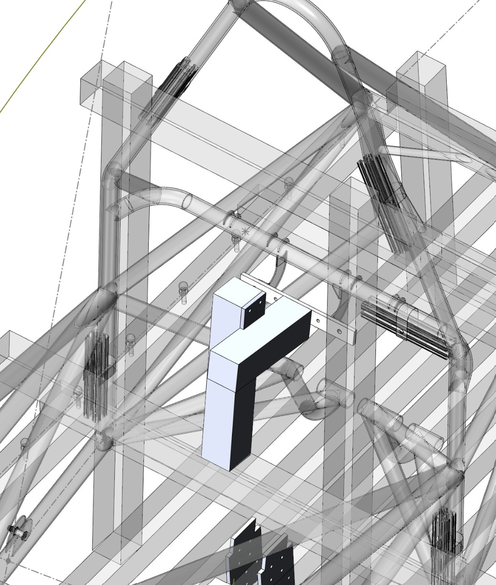
Mold Design
Mold CAD partner: Michelle Chow
The seat was manufactured using a male mold to simplify layup and demolding, while ensuring a high-quality finish on the exposed surface. The male mold also reduced overall mold material usage. The mold was designed to be reusable, rigid under vacuum loading, and easily disassembled to allow removal of the cured part.
Material Selection and Manufacturing Strategy
Initially I intended the mold to be made PBLT foam, which was selected by compatibility with the maximum threshold curing temp for our wet layup process. The foam was to have a 30-75pcf density (depending on whether we would machine in-house at Jacobs or on a professional machine by a sponsor) by considering spindle horsepower and rigidity. The in-house CNC router had limited rigidity and Z-height capacity, which constrained toolpaths and required careful planning of mold segmentation. The mold pieces would then be glued with PB Bond 240.
However, I later pivoted to FDM 3D printing the mold using PET-G. This was because foam suitable for composite layups weren’t a common material for industry to machine, and it was difficult to find machines that were set up for this foam. Additionally, machining accurate locating features in foam on the in-house router was challenging due to tool offsets and seat depths. This 3D printed approach also reduced cost and leveraged available sponsorship resources.
Mold Segmentation, Locating, and Assembly
A primary design challenge was ensuring accurate locating and joining the mold. The mold was split into three parallel sections to accommodate manufacturing constraints and enable demolding of the convex geometry. These sections were aligned using through-hole
features and threaded rods spanning the width of the mold.
Designing locating features for a convex mold presented challenges, as features on side faces would require machining from multiple orientations. The three-piece parallel segmentation avoided this complexity while still maintaining alignment accuracy and structural rigidity.
Locating strategy focused on fully constraining all degrees of freedom between mold sections. Flat mating faces were used in combination with alignment features (threaded rods and geometry constraining X and Y). The threaded rods also provided compression and constraint in the remaining directions. This approach ensured repeatable, accurate alignment and also served as a clamping mechanism during adhesive bonding and layup.
Design for assembly, disassembly, demolding
The mold was designed for easy disassembly and removal and reusability. The three part segmentation was driven by printer bed size to minimize part count for easier assembly and disassembly. Threaded rods could be removed to release the center section first, creating clearance for the side sections to be removed. Through-holes (approximately 1 inch diameter) were incorporated to allow tubes
to be inserted and used as a lever to push out the center section.
Vertical cutouts were added along the mold perimeter to allow insertion of pry bars beneath the cured composite. These cutouts were chamfered outward to improve access while minimizing large vacuum cavities.
Design for Layup and Manufacturing
The mold included approximately 2 inches of perimeter material around the seat geometry. This served multiple purposes:
- it allows us to trim the seat into its final shape instead of need to lay up plies precisely at edges
- provides surface for adhesion between the composite and mold
- carbon fiber laminates have finite stiffness and adhesive strength, sufficient contact area was required to prevent the laminate from lifting during vacuum application
- created space for vacuum bagging tape and sealing
Sharp transitions ("moats") were incorporated into the mold geometry to act as visual trim guides, allowing for consistent and accurate post-processing. All corners were kept above 60° to prevent bridging during layup and to avoid large void volumes that would weaken vacuum pressure. Having a convex mold with the seat’s edge flange radii made this quite difficult, since we needed to make it easy to lay up with the flange.
Additional considerations included ensuring that Rohacell core inserts could be easily integrated during layup. Core material was
excluded from edge flange regions to maintain flexibility and simplify fabrication.
Additional Design Features
The mold included shallow, tapered cavities to indicate mounting hole and harness locations, allowing accurate post-processing without constraining final placement. Sectioning planes were incorporated at the highest points of the seat to guide mold splitting and improve manufacturability.
All edges were filleted or chamfered to improve manufacturability, reduce stress concentrations, and facilitate layup.
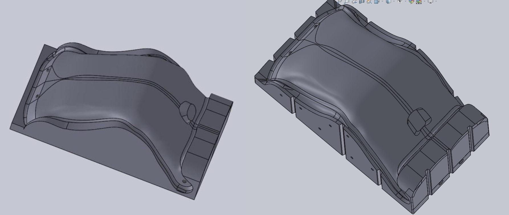
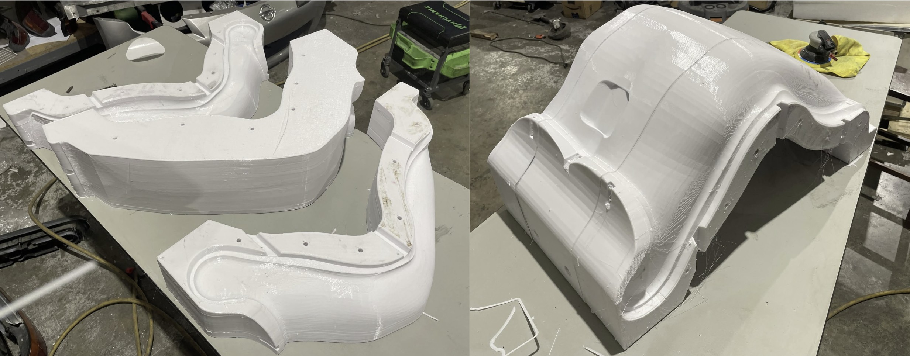